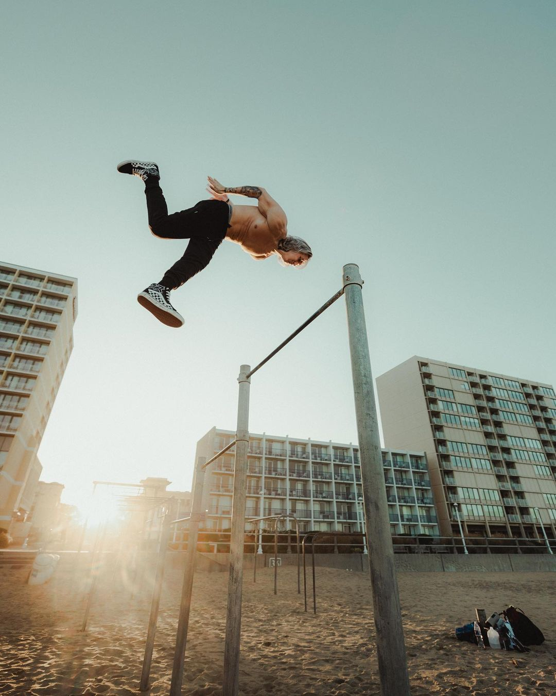

ESTATICOS
Los ejercicios Estáticos o isométricos en la Calistenia son aquellos en donde el atleta permanece en la misma posición durante la ejecución del elemento. Cuando se ejecuta un ejercicio estático la longitud del músculo prácticamente no varia y hablamos de una contracción muscular estática.

DINAMICOS
Los elementos Dinámicos sonejercicios avanzados que consisten en el movimiento y balanceo del cuerpo, se utilizan en "freestyle", aparte de fuerza requieren gran agilidad y reflejos. Ejemplos de estos pueden ser: Swing 360, Dragon 540, Barspin, etc.
BALANCE
Los ejercicios de Balance son aquellos en los que hay que permanecer en la misma posición durante su ejecución. A diferencia de los elementos estaticos, que requieren de mucha fuerza y poco equilibrio, los elementos de balance requieren de mucho equilibrio y poca fuerza. El más claro ejemplo de balance es el Pino o Handstand.
POWER MOVES
Los Power Moves consisten, generalmente, en realizar "repeticiones" de un elemento estatico. Por ejemplo: Flexiones en Full Planche o Pull Ups en Front Lever.
STREET LIFTING
El Streetlifting se encuadra en una de las categorías del Street Workout, consiste en lastrarse al realizar dominadas y los fondos, junto a otros ejercicios que pueden ir variando dependiendo de la competición, entre ellos: las pistol, muscle-up, sentadillas (con barras, Kettlebells o chalecos) o algo menos visto, pero no menos importante, como las pull-up one arm y flexiones con chalecos.